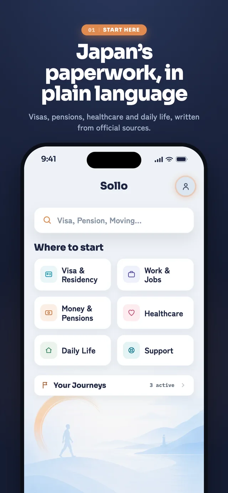
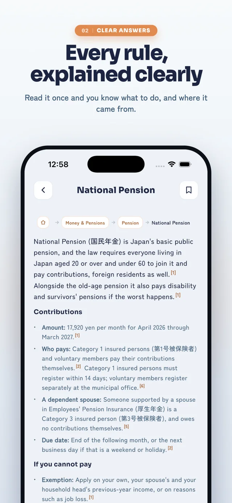
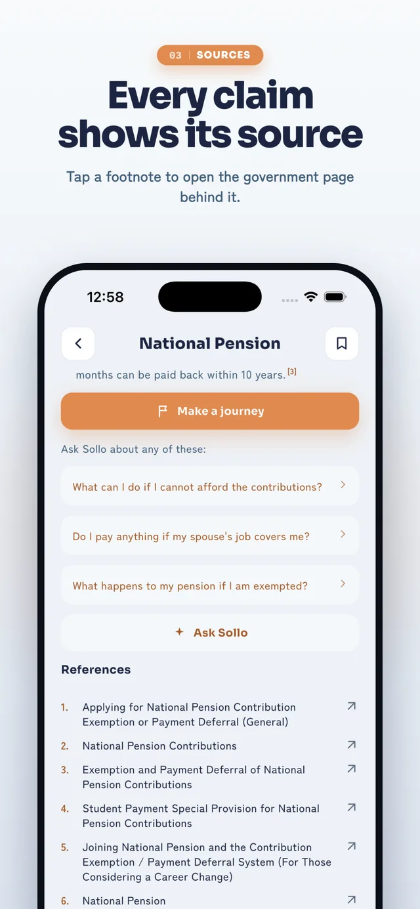
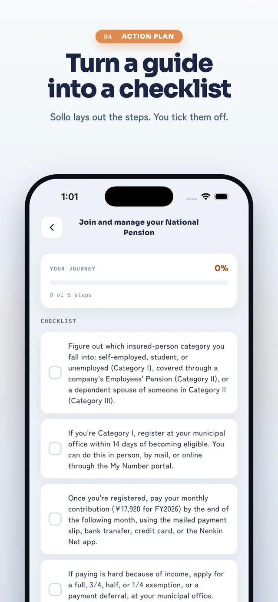
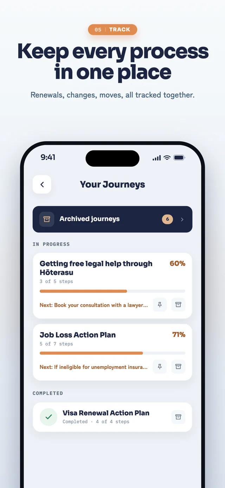
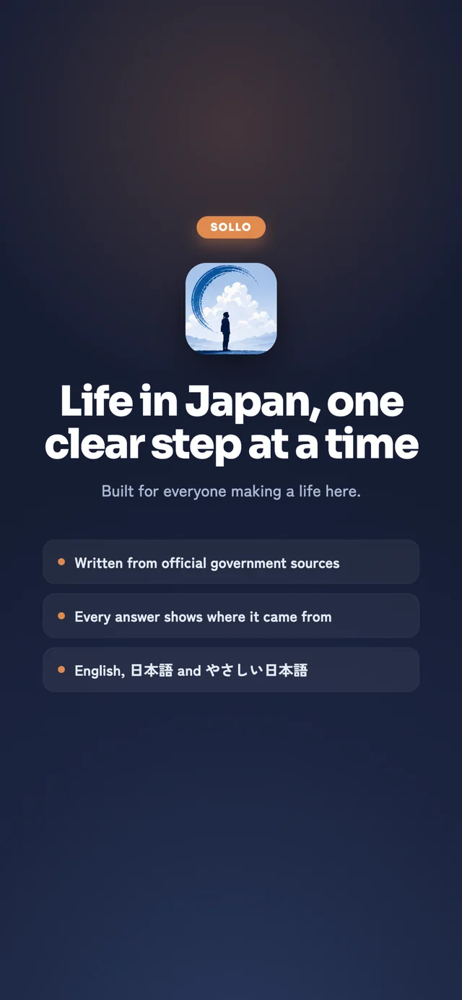

Centline
In progress
For a one-truck owner-operator deciding, at a loading dock at
night, whether a load is worth taking.
Brokers quote dollars per loaded mile. The empty miles cost the same and pay
nothing, which is why new carriers go under. A $1,500 load that reads as $260 of
profit is a $50 loss once they are counted. I designed the system and built the
app: a documented design system, a Flutter client, and 707 tests.
Design systemFlutterSupabaseWCAG 2.2707 tests
Sollo
Internship
For a foreign resident of Japan facing a system written in a
language and a format they were never the audience for.
An AI assistant that makes Japanese government paperwork navigable. I audited the
proof of concept, proposed HCI-grounded changes, and built a 24-screen interactive
prototype of the whole flow. Then I rebuilt the post-authentication app onto a new
design system, extracting colour, spacing and type tokens and building the reusable
widget and icon library the team now works against. I designed and enforced its
WCAG AA light and dark theme, measuring contrast ratios and rejecting handoff
colours that failed, and authored every interface string across nine locales.
Design tokensComponent libraryFigmaFlutterWCAG AA9 locales






Sollo’s own App Store panels. Shipped to the store in August 2026.
CommU
Research
For a student who commutes to campus, arrives for class, and
leaves again without ever finding a way into campus life.
Off-campus students described their time on campus as purely functional: arrive,
attend, leave. What was happening on campus reached them through ignored emails,
posters and word of mouth, and every one of them said they would meet people in
the same situation if there were any way to do it. I ran the study, then built the
web app around what it found: events in one place, posted by anyone, and a way to
find the other people who drive in.
Semi-structured interviewsThematic analysisPrototypingJavaScriptFlaskMongoDB
sollo.my
Shipped
For someone who has heard the app exists and needs to
understand it in their own language before they trust it.
The Sollo landing site: static, no build step, eleven languages including
right-to-left Arabic. Built to load fast on a phone on mobile data, because that
is what the audience is on.
HTML/CSS/JS11 languagesRTLVercel